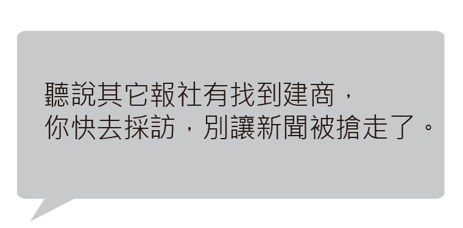
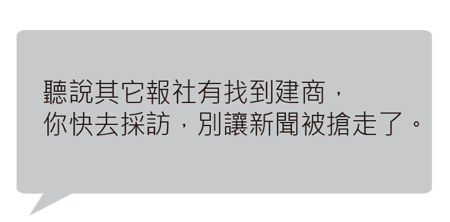

記者出任務
It's not easy to be a good journalist.
緊急任務!!!
你現在是一名記者，
剛剛發生一場大地震，報社派你去現場收集資訊，
並給你四小時的時間完成一篇詳細深入的報導。
剛剛發生一場大地震，報社派你去現場收集資訊，
並給你四小時的時間完成一篇詳細深入的報導。
>> 到現場之後，你要決定採訪哪些人 ，採訪途中會面臨一些突發狀況，影響採訪進行。
>> 收集完資料，也必須花時間撰寫報導，下標題更是重要， 而所有任務，都必須在四小時內完成。
>> 收集完資料，也必須花時間撰寫報導，下標題更是重要， 而所有任務，都必須在四小時內完成。
準備好了嗎? 捲起袖子出發吧!
任務結束
It's not easy to be a good journalist.
現在你知道產製一則新聞不容易了吧！
記者必須在最短的時間內，找到最完整的資訊，途中還可能會遇到外力干預。
消化完資訊後，再用最清楚的邏輯與簡單的文字，告訴讀者事件的來龍去脈。
希望透過此遊戲讓大家了解記者產製新聞的過程，
並了解我們平日閱讀的資訊是如何產製的，
而當我們了解時，自然就會有判斷資訊的能力。
我們將採訪時聽聞的個案融入遊戲中，但不包含所有記者的狀況。
記者必須在最短的時間內，找到最完整的資訊，途中還可能會遇到外力干預。
消化完資訊後，再用最清楚的邏輯與簡單的文字，告訴讀者事件的來龍去脈。
希望透過此遊戲讓大家了解記者產製新聞的過程，
並了解我們平日閱讀的資訊是如何產製的，
而當我們了解時，自然就會有判斷資訊的能力。
我們將採訪時聽聞的個案融入遊戲中，但不包含所有記者的狀況。
《媒控》守護你的腦部健康，讓你容光煥發
Develope by IMBIG. Music: Amazing Plan - Distressed by Kevin MacLeod is licensed under a Creative Commons Attribution license
Develope by IMBIG. Music: Amazing Plan - Distressed by Kevin MacLeod is licensed under a Creative Commons Attribution license
00
:
00
:
04
來到現場，發現三棟大樓倒塌，
要不要訪受難者家屬呢?（過程為20分鐘）
要不要訪受難者家屬呢?（過程為20分鐘）
我應該可以問問地震發生當時的情況或是大樓倒塌的場景。
先省時間採訪別人。
剛剛搜救人員從大樓內救出一對母女
要不要訪救災人員或救災中心?
（過程為30分鐘）
要不要訪救災人員或救災中心?
（過程為30分鐘）
我可以拿到最新救災情況：救災人員、獲救人名單及數量、車輛、搜救犬等...
我覺得救難資料不重要，想花時間在採訪別人。
看到大樓倒塌，發現柱子裡面有沙拉桶等填充物。
要不要訪建築專家?
（過程為40分鐘）
要不要訪建築專家?
（過程為40分鐘）

我可以得到可靠的專業分析 。
省些時間採訪別人。
同事傳臉書訊息給你，請你提供粉專即時新聞。
（強制縮減三十分鐘）
（強制縮減三十分鐘）
總編輯打電話給你，要你不要採訪王部長。
從政府機關那裡下手，感覺挖得到新聞。
要不要訪問相關的政府官員呢？（過程為六十分鐘）
要不要訪問相關的政府官員呢？（過程為六十分鐘）
記得略過王部長!
我可以拿到當時建築檢查的相關報告，了解是誰核准了執照，有哪些相關的承辦人員。
這之後再看政府發表什麼言論好了 。
總編輯要求你採訪建商。
 

查到蓋這棟大樓的建築公司及負責人名字。
（過程為六十分鐘）
（過程為六十分鐘）
總編輯叫我一定要訪。
採訪結束，要不要拍照紀錄？
（過程為十分鐘）
（過程為十分鐘）
可以清楚呈現災區。
快來不及了！先寫稿。
終於蒐集完資料了，快點來寫稿吧!
（敲鍵盤中... 過程為60分鐘）
（敲鍵盤中... 過程為60分鐘）
最後階段! 下標題!
來個吃猛藥還是喝溫水？
來個吃猛藥還是喝溫水？


編輯台建議

時間不夠了!!! OUT!!!
再挑戰一次! >>